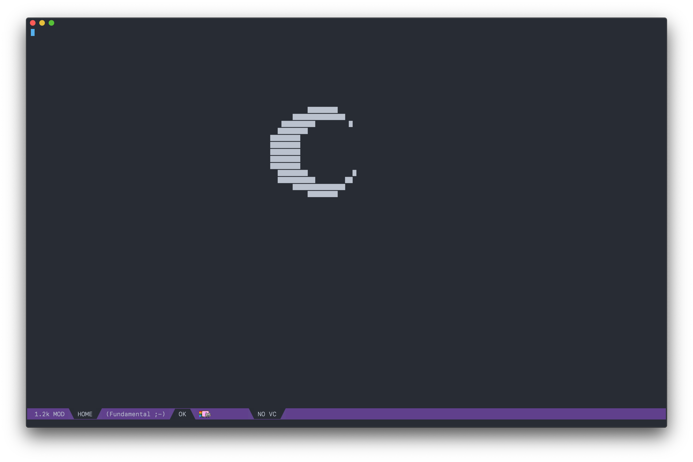
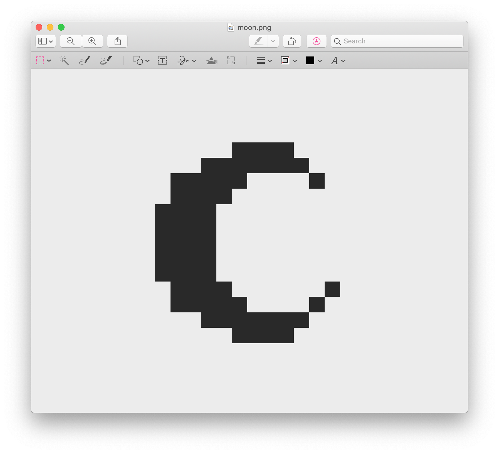

Fancy startup screen
Table of Contents
Text image

I first drew the image in pixel mode in photoshop and exported it to png file:

Then used a simple python script to convert this image to text. The script converts black pixel to "██" and white pixel to space:
# -*- coding: utf-8 -*- import sys import numpy as np from PIL import Image ARGV = sys.argv DEFAULT_IMAGE_NAME = 'image.png' PIXEL = '██' SPACE = ' ' THRESH = 127 black = SPACE white = PIXEL if len(ARGV) > 1: image_name = ARGV[1] else: image_name = DEFAULT_IMAGE_NAME if len(ARGV) > 2: cmd = ARGV[2] if cmd == '-i': # innvert black, white = PIXEL, SPACE image = Image.open(image_name) width, height = image.size image = np.asarray(image) text_image = '' for line in image: text_line = '' for pixel in line: mask = pixel[3] if mask < THRESH: text_line += black else: text_line += white text_image += text_line + '\n' print(text_image)
Terminal displays:
████████
██████████████
█████████ █
████████
████████
████████
████████
████████
████████
████████ █
██████████ ██
██████████████
████████
xpm image
I also made an actual image for the moon, for that I converted png file to xpm with imagemagick:
convert moon.png moon.xpm
To insert the image:
(overlay-put (make-overlay beg end) 'display (create-image image-path))